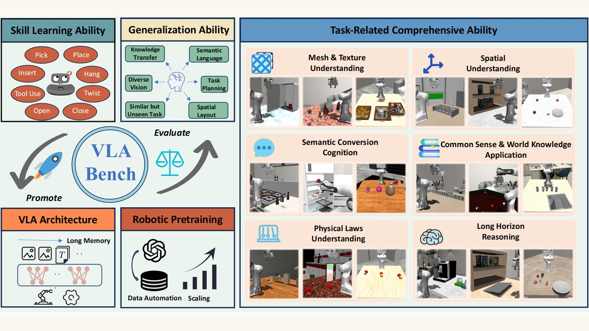

VL
VLABench
语言条件操作的仿真基准，任务中嵌入常识与空间关系推理。
判词
任务按能力维度划分，指令中嵌入常识与空间关系，场景仍是仿真。
壹已知之弊
- 公开榜数据未稳定发布。
贰碑面
VLABench
官方榜单 ↗
类型 仿真指标 成功率 SR（X-VLA 分榜为进度分 PS）行数 46刷新 人工核验官方数据日 2026-06-07本站拉取 2026-11-14
据 VLABench 仓库，官方排行榜仍是待办；本碑按协议、赛道分 10 榜录自报成绩。官方 10 任务设定下 π0-FAST + Two Bridges 的 T1 分布内 SR 0.648、T2 跨类别 0.399（2026-06）。
| # | 模型 | 成功率 SR（X-VLA 分榜为进度分 PS） | 协议 | 分榜 | 日期 | 状态 |
|---|---|---|---|---|---|---|
| 1 | π0-FAST + Two Bridges（ETC 协同训练） 复旦大学 / 上海创智学院 |
0.648 |
同一 10 任务微调集；VLABench 团队论文方法：Pi0-FAST 底座，delta chunk，三路相机，100k 步，ETC 视觉语言数据协同训练；论文表 1（Avg_SR，0–1）；赛道 1（分布内） |
官方10任务·T1分布内 | 06·07 | 自报 |
| 2 | π0-FAST（delta chunk） Physical Intelligence |
0.512 |
官方 primitive 微调集 10 任务×500 条（共 5,000 条），8×H100 训 30k 步；官方标准评测回合；VLABench 团队发布的参考结果（Avg_SR，0–1）；赛道 1（分布内） |
官方10任务·T1分布内 | 11·10 | 自报 |
| 3 | π0 Physical Intelligence |
0.47 |
官方 primitive 微调集 10 任务×500 条（共 5,000 条），8×H100 训 30k 步；官方标准评测回合；VLABench 团队发布的参考结果（Avg_SR，0–1）；赛道 1（分布内） |
官方10任务·T1分布内 | 11·10 | 自报 |
| 4 | π0.5（stop-gradient） Physical Intelligence |
0.406 |
官方 primitive 微调集 10 任务×500 条（共 5,000 条），8×H100 训 30k 步；官方标准评测回合；VLABench 团队发布的参考结果（Avg_SR，0–1）；赛道 1（分布内） |
官方10任务·T1分布内 | 11·10 | 自报 |
| 5 | π0-FAST（relative chunk） Physical Intelligence |
0.291 |
官方 primitive 微调集 10 任务×500 条（共 5,000 条），8×H100 训 30k 步；官方标准评测回合；VLABench 团队发布的参考结果（Avg_SR，0–1）；赛道 1（分布内） |
官方10任务·T1分布内 | 11·10 | 自报 |
| 1 | π0-FAST + Two Bridges（ETC 协同训练） 复旦大学 / 上海创智学院 |
0.399 |
同一 10 任务微调集；VLABench 团队论文方法：Pi0-FAST 底座，delta chunk，三路相机，100k 步，ETC 视觉语言数据协同训练；论文表 1（Avg_SR，0–1）；赛道 2（跨类别） |
官方10任务·T2跨类别 | 06·07 | 自报 |
| 2 | π0-FAST（delta chunk） Physical Intelligence |
0.342 |
官方 primitive 微调集 10 任务×500 条（共 5,000 条），8×H100 训 30k 步；官方标准评测回合；VLABench 团队发布的参考结果（Avg_SR，0–1）；赛道 2（跨类别）；insert_flower 一项卡片记为「?」 |
官方10任务·T2跨类别 | 11·10 | 自报 |
| 3 | π0.5（stop-gradient） Physical Intelligence |
0.226 |
官方 primitive 微调集 10 任务×500 条（共 5,000 条），8×H100 训 30k 步；官方标准评测回合；VLABench 团队发布的参考结果（Avg_SR，0–1）；赛道 2（跨类别） |
官方10任务·T2跨类别 | 11·10 | 自报 |
| 4 | π0 Physical Intelligence |
0.212 |
官方 primitive 微调集 10 任务×500 条（共 5,000 条），8×H100 训 30k 步；官方标准评测回合；VLABench 团队发布的参考结果（Avg_SR，0–1）；赛道 2（跨类别） |
官方10任务·T2跨类别 | 11·10 | 自报 |
| 5 | π0-FAST（relative chunk） Physical Intelligence |
0.181 |
官方 primitive 微调集 10 任务×500 条（共 5,000 条），8×H100 训 30k 步；官方标准评测回合；VLABench 团队发布的参考结果（Avg_SR，0–1）；赛道 2（跨类别）；insert_flower、select_poker 两项卡片记为「?」，均值按其余任务 |
官方10任务·T2跨类别 | 11·10 | 自报 |
| 1 | π0-FAST（delta chunk） Physical Intelligence |
0.417 |
官方 primitive 微调集 10 任务×500 条（共 5,000 条），8×H100 训 30k 步；官方标准评测回合；VLABench 团队发布的参考结果（Avg_SR，0–1）；赛道 3（常识） |
官方10任务·T3常识 | 11·10 | 自报 |
| 2 | π0 Physical Intelligence |
0.291 |
官方 primitive 微调集 10 任务×500 条（共 5,000 条），8×H100 训 30k 步；官方标准评测回合；VLABench 团队发布的参考结果（Avg_SR，0–1）；赛道 3（常识） |
官方10任务·T3常识 | 11·10 | 自报 |
| 3 | π0-FAST（relative chunk） Physical Intelligence |
0.211 |
官方 primitive 微调集 10 任务×500 条（共 5,000 条），8×H100 训 30k 步；官方标准评测回合；VLABench 团队发布的参考结果（Avg_SR，0–1）；赛道 3（常识）；insert_flower、select_poker 两项卡片记为「?」，均值按其余任务 |
官方10任务·T3常识 | 11·10 | 自报 |
| 4 | π0.5（stop-gradient） Physical Intelligence |
0.18 |
官方 primitive 微调集 10 任务×500 条（共 5,000 条），8×H100 训 30k 步；官方标准评测回合；VLABench 团队发布的参考结果（Avg_SR，0–1）；赛道 3（常识） |
官方10任务·T3常识 | 11·10 | 自报 |
| 1 | π0-FAST（delta chunk） Physical Intelligence |
0.442 |
官方 primitive 微调集 10 任务×500 条（共 5,000 条），8×H100 训 30k 步；官方标准评测回合；VLABench 团队发布的参考结果（Avg_SR，0–1）；赛道 4（语义指令） |
官方10任务·T4语义指令 | 11·10 | 自报 |
| 2 | π0-FAST（relative chunk） Physical Intelligence |
0.199 |
官方 primitive 微调集 10 任务×500 条（共 5,000 条），8×H100 训 30k 步；官方标准评测回合；VLABench 团队发布的参考结果（Avg_SR，0–1）；赛道 4（语义指令）；insert_flower、select_poker 两项卡片记为「?」，均值按其余任务 |
官方10任务·T4语义指令 | 11·10 | 自报 |
| 3 | π0 Physical Intelligence |
0.173 |
官方 primitive 微调集 10 任务×500 条（共 5,000 条），8×H100 训 30k 步；官方标准评测回合；VLABench 团队发布的参考结果（Avg_SR，0–1）；赛道 4（语义指令） |
官方10任务·T4语义指令 | 11·10 | 自报 |
| 4 | π0.5（stop-gradient） Physical Intelligence |
0.161 |
官方 primitive 微调集 10 任务×500 条（共 5,000 条），8×H100 训 30k 步；官方标准评测回合；VLABench 团队发布的参考结果（Avg_SR，0–1）；赛道 4（语义指令） |
官方10任务·T4语义指令 | 11·10 | 自报 |
| 1 | π0（Base） Physical Intelligence |
13.2% |
ICCV 2025 论文表 2；5 个 primitive 任务各 200 条示范多任务微调；每任务 50 回合（每赛道 250 次）；基准论文复现；赛道 1（分布内）SR；PS 29.3 / IS 59.6 |
论文版·T1分布内 | 10 | 自报 |
| 2 | π0-FAST Physical Intelligence |
9.2% |
ICCV 2025 论文表 2；5 个 primitive 任务各 200 条示范多任务微调；每任务 50 回合（每赛道 250 次）；基准论文复现；赛道 1（分布内）SR；PS 25.5 / IS 59.9 |
论文版·T1分布内 | 10 | 自报 |
| 3 | OpenVLA Stanford 等 |
6.4% |
ICCV 2025 论文表 2；5 个 primitive 任务各 200 条示范多任务微调；每任务 50 回合（每赛道 250 次）；基准论文复现；赛道 1（分布内）SR；PS 13.2 / IS 50.0 |
论文版·T1分布内 | 10 | 自报 |
| 4 | RDT-1B 清华大学 |
6.0% |
ICCV 2025 论文表 2；5 个 primitive 任务各 200 条示范多任务微调；每任务 50 回合（每赛道 250 次）；基准论文复现；赛道 1（分布内）SR；PS 14.3 / IS 50.0 |
论文版·T1分布内 | 10 | 自报 |
| 5 | Octo UC Berkeley 等 |
2.0% |
ICCV 2025 论文表 2；5 个 primitive 任务各 200 条示范多任务微调；每任务 50 回合（每赛道 250 次）；基准论文复现；赛道 1（分布内）SR；PS 5.6 / IS 32.0 |
论文版·T1分布内 | 10 | 自报 |
| 1 | π0（Base） Physical Intelligence |
6.0% |
ICCV 2025 论文表 2；5 个 primitive 任务各 200 条示范多任务微调；每任务 50 回合（每赛道 250 次）；基准论文复现；赛道 2（跨类别）SR；PS 21.4 / IS 49.6 |
论文版·T2跨类别 | 10 | 自报 |
| 2 | OpenVLA Stanford 等 |
3.2% |
ICCV 2025 论文表 2；5 个 primitive 任务各 200 条示范多任务微调；每任务 50 回合（每赛道 250 次）；基准论文复现；赛道 2（跨类别）SR；PS 7.0 / IS 35.6 |
论文版·T2跨类别 | 10 | 自报 |
| 2 | RDT-1B 清华大学 |
3.2% |
ICCV 2025 论文表 2；5 个 primitive 任务各 200 条示范多任务微调；每任务 50 回合（每赛道 250 次）；基准论文复现；赛道 2（跨类别）SR；PS 8.2 / IS 39.2 |
论文版·T2跨类别 | 10 | 自报 |
| 4 | π0-FAST Physical Intelligence |
2.4% |
ICCV 2025 论文表 2；5 个 primitive 任务各 200 条示范多任务微调；每任务 50 回合（每赛道 250 次）；基准论文复现；赛道 2（跨类别）SR；PS 16.5 / IS 47.6 |
论文版·T2跨类别 | 10 | 自报 |
| 5 | Octo UC Berkeley 等 |
0.0% |
ICCV 2025 论文表 2；5 个 primitive 任务各 200 条示范多任务微调；每任务 50 回合（每赛道 250 次）；基准论文复现；赛道 2（跨类别）SR；PS 2.0 / IS 20.4 |
论文版·T2跨类别 | 10 | 自报 |
| 1 | π0（Base） Physical Intelligence |
5.2% |
ICCV 2025 论文表 2；5 个 primitive 任务各 200 条示范多任务微调；每任务 50 回合（每赛道 250 次）；基准论文复现；赛道 3（常识）SR；PS 20.0 / IS 60.4 |
论文版·T3常识 | 10 | 自报 |
| 2 | RDT-1B 清华大学 |
4.0% |
ICCV 2025 论文表 2；5 个 primitive 任务各 200 条示范多任务微调；每任务 50 回合（每赛道 250 次）；基准论文复现；赛道 3（常识）SR；PS 7.2 / IS 36.0 |
论文版·T3常识 | 10 | 自报 |
| 3 | π0-FAST Physical Intelligence |
3.6% |
ICCV 2025 论文表 2；5 个 primitive 任务各 200 条示范多任务微调；每任务 50 回合（每赛道 250 次）；基准论文复现；赛道 3（常识）SR；PS 15.4 / IS 50.0 |
论文版·T3常识 | 10 | 自报 |
| 4 | OpenVLA Stanford 等 |
3.2% |
ICCV 2025 论文表 2；5 个 primitive 任务各 200 条示范多任务微调；每任务 50 回合（每赛道 250 次）；基准论文复现；赛道 3（常识）SR；PS 8.0 / IS 38.0 |
论文版·T3常识 | 10 | 自报 |
| 5 | Octo UC Berkeley 等 |
1.2% |
ICCV 2025 论文表 2；5 个 primitive 任务各 200 条示范多任务微调；每任务 50 回合（每赛道 250 次）；基准论文复现；赛道 3（常识）SR；PS 2.8 / IS 22.0 |
论文版·T3常识 | 10 | 自报 |
| 1 | π0-FAST Physical Intelligence |
6.8% |
ICCV 2025 论文表 2；5 个 primitive 任务各 200 条示范多任务微调；每任务 50 回合（每赛道 250 次）；基准论文复现；赛道 4（语义指令）SR；PS 17.2 / IS 52.0 |
论文版·T4语义指令 | 10 | 自报 |
| 2 | RDT-1B 清华大学 |
4.4% |
ICCV 2025 论文表 2；5 个 primitive 任务各 200 条示范多任务微调；每任务 50 回合（每赛道 250 次）；基准论文复现；赛道 4（语义指令）SR；PS 8.0 / IS 35.6 |
论文版·T4语义指令 | 10 | 自报 |
| 3 | π0（Base） Physical Intelligence |
3.6% |
ICCV 2025 论文表 2；5 个 primitive 任务各 200 条示范多任务微调；每任务 50 回合（每赛道 250 次）；基准论文复现；赛道 4（语义指令）SR；PS 19.3 / IS 60.4 |
论文版·T4语义指令 | 10 | 自报 |
| 4 | OpenVLA Stanford 等 |
2.8% |
ICCV 2025 论文表 2；5 个 primitive 任务各 200 条示范多任务微调；每任务 50 回合（每赛道 250 次）；基准论文复现；赛道 4（语义指令）SR；PS 9.2 / IS 38.0 |
论文版·T4语义指令 | 10 | 自报 |
| 5 | Octo UC Berkeley 等 |
1.2% |
ICCV 2025 论文表 2；5 个 primitive 任务各 200 条示范多任务微调；每任务 50 回合（每赛道 250 次）；基准论文复现；赛道 4（语义指令）SR；PS 4.0 / IS 26.8 |
论文版·T4语义指令 | 10 | 自报 |
| 1 | E₀ 中山大学 等 |
38.15% |
E₀ 论文表 11：官方 VLABench 全量数据混训，单卡 30k 步；select toy/fruit/painting/poker/mahjong 五任务 SR 均值；赛道与回合数未写；五项 54.0/34.0/12.0/72.0/18.75% |
E₀ 复训·5项选择 | 11·26 | 自报 |
| 2 | π0-FAST Physical Intelligence |
32.97% |
E₀ 论文表 11，E₀ 作者同设定复训；五项 46.0/42.0/26.0/30.0/20.83% |
E₀ 复训·5项选择 | 11·26 | 自报 |
| 3 | π0 Physical Intelligence |
26.20% |
E₀ 论文表 11，E₀ 作者同设定复训；五项 54.0/48.0/16.0/6.0/6.98% |
E₀ 复训·5项选择 | 11·26 | 自报 |
| 4 | π0.5 Physical Intelligence |
20.90% |
E₀ 论文表 11，E₀ 作者同设定复训；五项 24.0/18.0/36.0/20.0/6.52% |
E₀ 复训·5项选择 | 11·26 | 自报 |
| 1 | X-VLA-0.9B 清华大学智能产业研究院 等 |
51.1 |
X-VLA 论文表 2：T1–T4 四赛道进度分 PS 均值；分项 分布内 67.8/跨类别 25.1/常识 48.2/语义指令 63.1（表 15）；微调数据与回合数未写 |
X-VLA 自报·PS 均值 | 10·11 | 自报 |
| 2 | GR00T-N1 NVIDIA |
39.7 |
X-VLA 论文表 2 所列 PS 均值，数值来源未注明 |
X-VLA 自报·PS 均值 | 10·11 | 自报 |
| 3 | π0 Physical Intelligence |
37.8 |
X-VLA 论文表 2 所列 PS 均值，数值来源未注明 |
X-VLA 自报·PS 均值 | 10·11 | 自报 |
| 4 | π0+FAST Physical Intelligence |
34.1 |
X-VLA 论文表 2 所列 PS 均值，数值来源未注明 |
X-VLA 自报·PS 均值 | 10·11 | 自报 |
叁上榜之器6 个
肆同类之碑